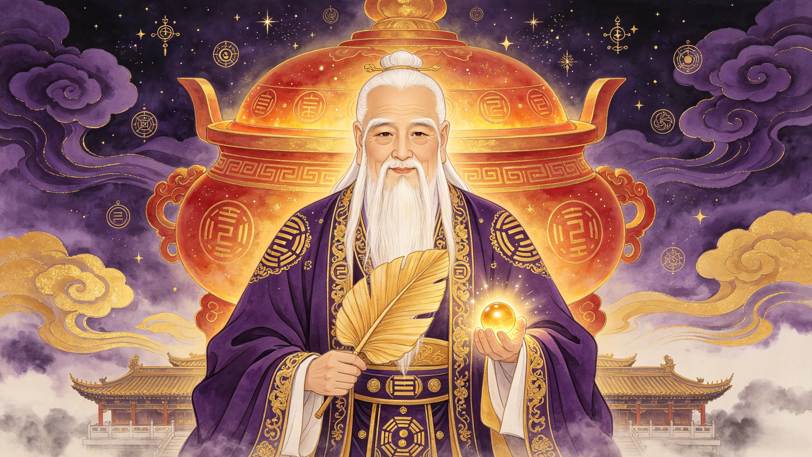

Keeper of the Cosmic Furnace
太上老君
The deified Laozi. Supreme Lord of Daoism. The alchemist whose golden pills gave gods their immortality — and whose furnace gave the Monkey King his fiery eyes.
Taishang Laojun (太上老君), the Grand Supreme Elder Lord, is the divine manifestation of Laozi and the supreme master of alchemy in Chinese mythology. As one of the Three Pure Ones, he oversees the creation of immortality elixirs and divine weapons — including Sun Wukong's Ruyi Jingu Bang.
Is Taishang Laojun the same as Laozi? Yes — Taishang Laojun is the deified form of Laozi (Lao Tzu), the legendary philosopher who wrote the Tao Te Ching. After his mortal life, he was apotheosized into one of the highest deities of the Daoist pantheon, known as one of the Three Pure Ones (Sanqing). While Laozi the philosopher taught the Way through words, Taishang Laojun governs it through divine alchemy — refining not just metals, but the very substance of immortality itself.
What is his role in Journey to the West? He appears as the celestial alchemist whose golden elixir pills were stolen and eaten by Sun Wukong, making the Monkey King virtually indestructible. Later, he trapped Wukong in his Eight Trigrams Furnace, intending to refine the stolen elixir back out of him — but Wukong survived and emerged with fiery golden eyes that could see through all illusions. His Diamond Snare was also the weapon that finally brought Wukong down during the duel with Erlang Shen.
Why is he important in Chinese mythology? He represents the pinnacle of Daoist cultivation — the transformation from mortal wisdom to divine power. His alchemy is a metaphor for spiritual refinement, and his furnace is where raw chaos is purified into order. He bridges philosophy and religion, mortality and divinity, in a way no other Chinese deity does.
Before he was a god, he was a man — Laozi, the "Old Master," keeper of the archives at the Zhou court. Disillusioned with the corruption of human governance, he rode a water buffalo westward toward the pass of Han Gu. There, the gatekeeper Yin Xi begged him to leave his wisdom behind. In a single night, Laozi wrote the Tao Te Ching — eighty-one verses on the nature of the Way, the power of non-action, and the art of living in harmony with the cosmos. He rode west into legend, and legend transformed him into Taishang Laojun — the "Supreme Lord of the Way," enthroned in the highest heaven, master of the cosmic crucible. No other figure in Chinese civilization has spanned such a complete arc: from historical philosopher to supreme deity.
In the celestial realm behind the thirty-third heaven, Taishang Laojun tends the Eight Trigrams Furnace — the cosmic crucible where base elements become divine. Here, he refines the Golden Elixir of Immortality, the substance that grants eternal life to the gods. Each pill takes millennia to perfect — a precise calibration of cosmic forces: lead and mercury, yin and yang, fire and water, regulated through the eight trigrams of the I Ching. His furnace does not merely heat; it transforms. It is the engine of celestial hierarchy — every immortal official in the Jade Emperor's court owes their longevity to his art. But alchemy is not charity: when Sun Wukong stole and consumed the entire batch of golden pills, he didn't just anger heaven — he broke the economy of immortality itself. No new pills meant no new immortals. The theft was not just a crime against the Jade Emperor; it was a strike at the foundation of celestial order.
After Erlang Shen captured Sun Wukong with the help of the Diamond Snare, the Monkey King was brought to heaven for execution. They tried every method — axes, thunderbolts, fire, and sword — but the stolen elixir, the peaches of immortality, and the heavenly wine had made Wukong's body impervious. So Taishang Laojun proposed a solution: place him in the Eight Trigrams Furnace and refine the elixir back out of his flesh. For forty-nine days, the furnace burned. The heat was cosmic — enough to reduce a dragon to ash. But Wukong found a crevice in the furnace corresponding to the Xun trigram — Wind, where the fire couldn't fully reach. He crouched there, eyes streaming from the smoke, body absorbing the heat of creation itself. When the furnace was opened on the forty-ninth day, Wukong burst forth — not reduced, but forged. His eyes, irritated by the divine smoke, had become Fiery Golden Eyes that could pierce any illusion. He kicked over the furnace, sending embers raining down to earth that became the Flaming Mountains. The very tool meant to destroy him had made him more powerful than ever.
From the Zhou dynasty archives to the highest heaven — how a mortal philosopher became one of the Three Pure Ones.
The Eight Trigrams Furnace, Diamond Snare, Golden Elixir, Banana-Leaf Fan — the sacred tools of the supreme alchemist.
When the furnace met the Monkey King. When the Diamond Snare struck from the clouds. The battles that shook the celestial realm.
The golden pills that grant eternal life — how they reframed destiny for gods and mortals, and what happened when they were stolen.
The cosmic crucible behind the thirty-third heaven. Forty-nine days of divine fire that forged the Monkey King's most feared power.
From Daoist temples to Chinese alchemy, from internal cultivation to modern media — how the Supreme Lord endures across millennia.
Send your words to Taishang Laojun. They will be carried on incense smoke to his celestial furnace behind the thirty-third heaven, preserved in the scrolls of the alchemist for eternity.
Dive Deeper